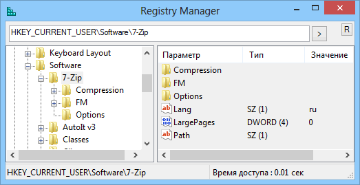

Registry_Manager
Назначение
Редактор реестра.

Бывший просмотрщик реестра преобразуется в менеджер.
Стали доступны опции из конт. меню:
1. Удаление параметров
2. Изменение двух типов строковых параметров (REG_SZ, REG_EXPAND_SZ)
3. Создание параметров (пока имеет смысл только для тех, которые возможно изменить)
4. Экспорт раздела
5. Копирование пути раздела